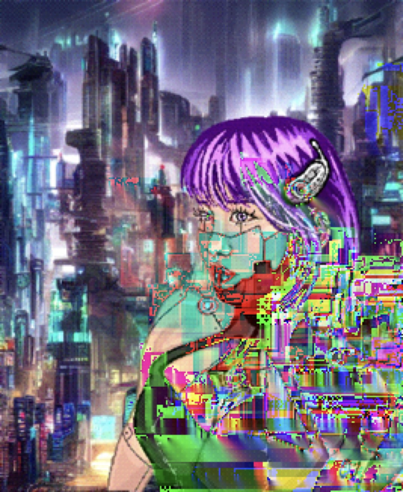
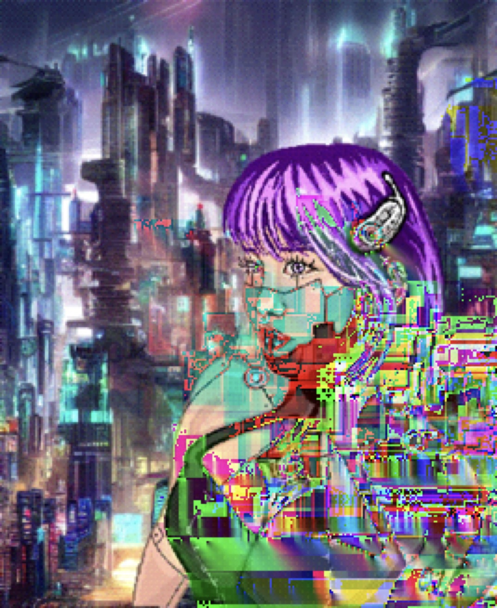
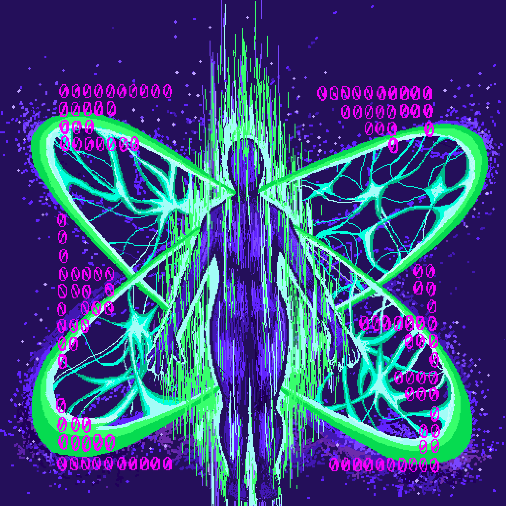
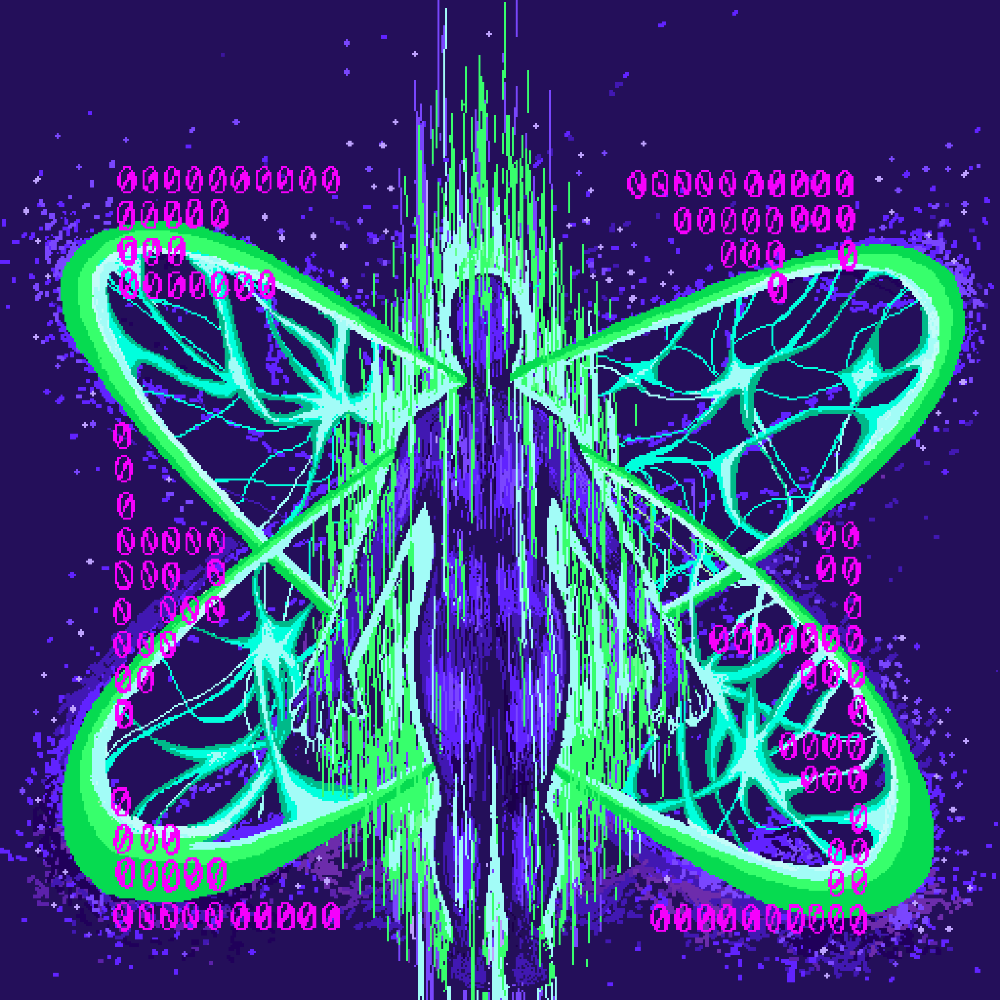

My practice is largely digital work such as photo, video, sound, 3D, AI, and pixel art. I am very interested in making art about alternate realities, dystopian futuristic worlds, video games, cyberpunk, everyone’s digital persona that lives on the internet, and the exploration of home and belonging.
My interest in these themes are deeply rooted in personal struggles and grappling with loss of home, loved ones, love, and the self. The creation of my alter ego is a way of escapism and a desire to exist in a different reality, maybe even as a means of dissociation.
I spent a lot of time thinking about how we are bound to our screens, being so entrenched in the digitized world that we lose touch with reality. The more digitized the world become, we lose real, authentic connection with people. Isolation, lonliness, depression, among many others are common issues prepetuated by the internet and social media. We see this so much with our generation and I think the younger generations progressively have it worse.
However, we were raised by the internet. The internet is here to stay and technology will continue to proliferate our world. The way the world gets our attention is through the screen. This may be one of the main reasons why I am so drawn to make work with the screen being my canvas.


 

[The alter ego is a cyborg living in an unknown dimension in a cyberpunk city, looking for belonging in a world of fast-paced chaos in a heavily machine dominated realm. There’s a loss of human touch, familiarity, and comfort as you are heavily on guard as a means of self-defense making use of the many computer modifications done to your body, replacing the human flesh. What is home? Where is home? Where do I belong? Where am I wanted? This is a pixel art drawing with themes of dissociation, loss, and home.]


[A representation of your digital persona glitching in the simulation and the physical form disintegrating. An exploration of our individual online presence, digital footprint, and cyber identity. Online avatar vs physical body. Online personality, appearance, aesthetic, lifestyle, everything vs irl. The idea of living entirely in the virtual world, virtual love, virtual friends, virtual virtual job, virtual everything. Becoming one with the machine and the internet. Pixel art drawing.]
 



everything is connected---------------------------------------------------
----------------------------------------------------------energy is eternal


copyright 2077, Yurina